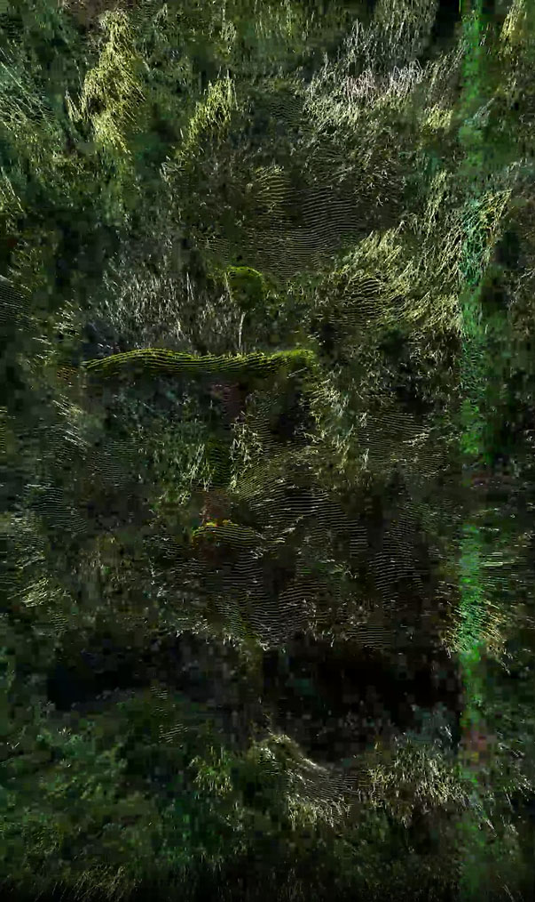
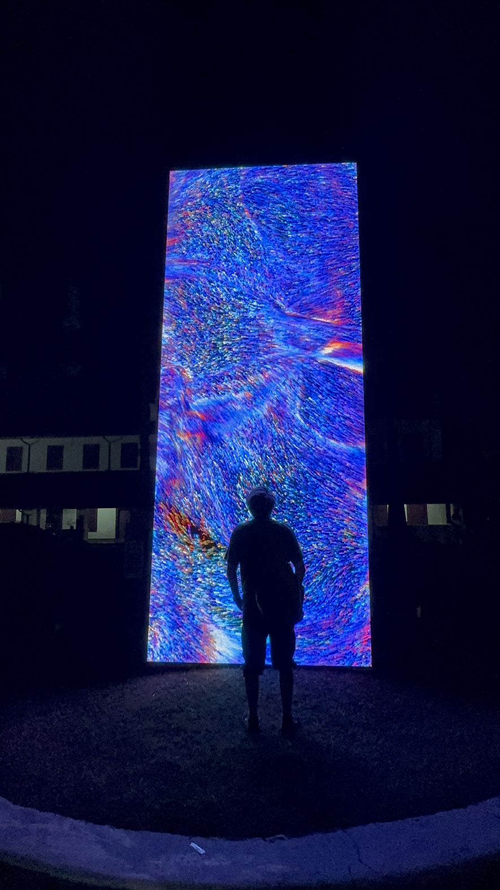
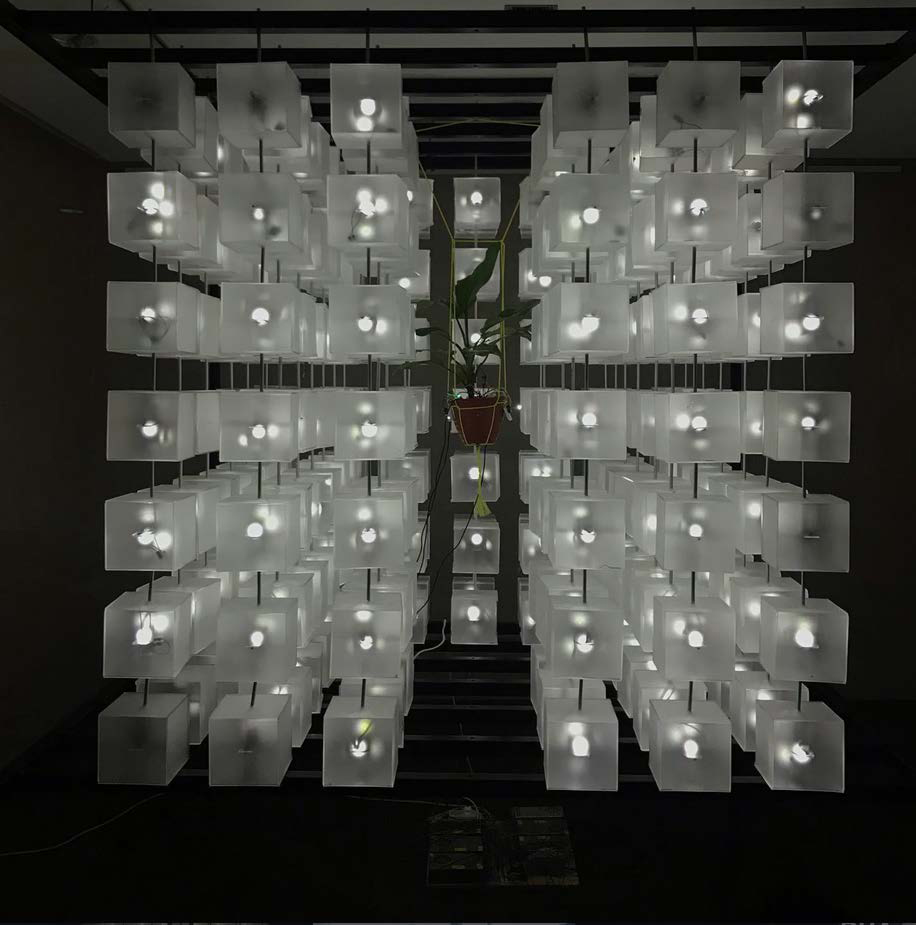
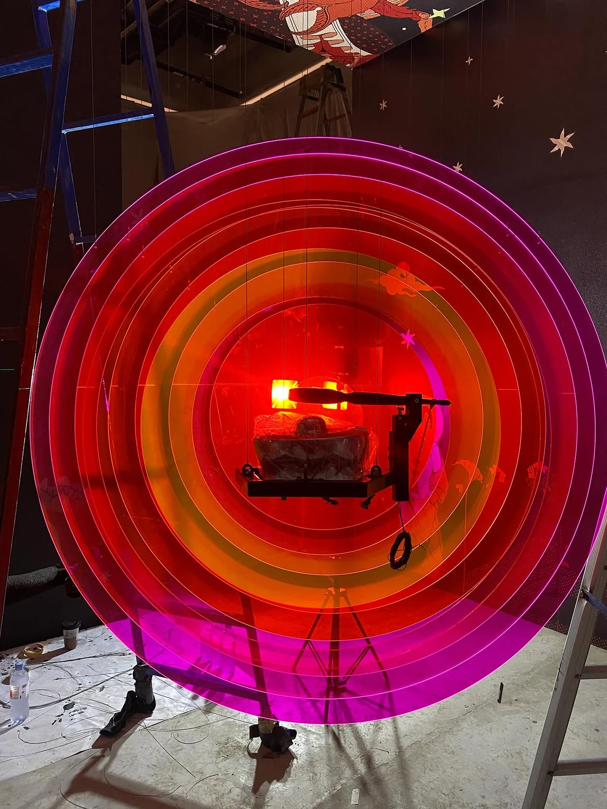
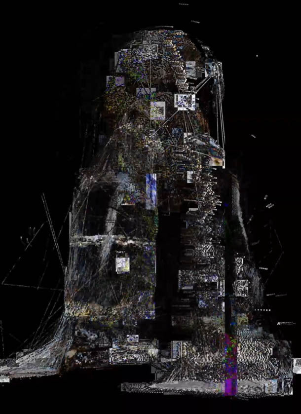
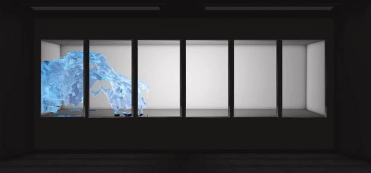
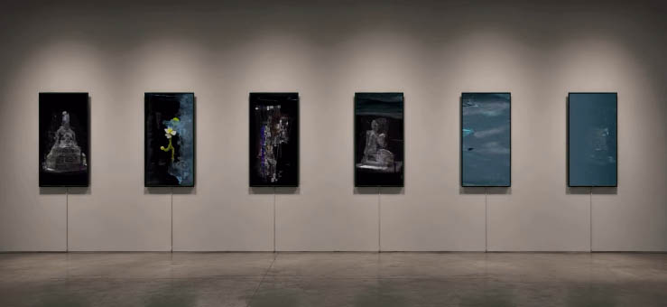

Ricky Janitra
Media Artist
Exploring sound, living systems,
environmental data,
and interactive technology.
Media Artist
Exploring sound, living systems,
environmental data,
and interactive technology.

2026
Video Installation
Real-time Environmental Data
Weather Project is a real-time data-driven video installation that transforms live weather information into an evolving visual landscape. Rather than treating weather as a passive background, the work positions it as an active collaborator in the creation of the artwork.
Temperature, humidity, wind speed, rainfall, and atmospheric conditions are translated into movement, color, rhythm, and visual composition. Environmental data continuously reshapes the installation, allowing nature itself to participate in the artistic process.
By converting weather data into a dynamic LED-based visual experience, the work invites audiences to perceive climate not only as something we physically experience, but also as an invisible force that influences behavior, emotion, movement, and our perception of space.
Commission
Makassar International Writers Festival
Makassar, Indonesia
2026
2025
Interactive Sound Installation
Solar Energy • Custom Electronics • Traditional Instruments
Lumiphona.Dat is an interactive sound installation inspired by the sun as the source of life, rhythm, and harmony. Solar energy is captured through photovoltaic panels, transformed into digital data, and interpreted by custom algorithms that activate mechanical systems striking traditional Indonesian musical instruments.
At the center of the installation, a glowing red sphere symbolizes the sun, while kenong instruments are arranged like planetary orbits. As the instruments are activated, constantly changing rhythmic patterns emerge, translating solar energy into a living sonic landscape.
By combining renewable energy, Indonesian cosmology, traditional instruments, and contemporary technology, Lumiphona.Dat explores how natural systems and cultural heritage can coexist within a single interactive ecosystem.
Commission
iForte Energy × Art Jakarta
Jakarta, Indonesia
2025

2020
Interactive Sound & Light Installation
Plants • Sensors • Electronics
Bioacoustic is an interactive installation that places living plants at the center of a responsive audiovisual system. Rather than serving as passive objects, plants become active participants that influence sound and light through their biological activity.
Using sensors and custom electronic systems, subtle biological responses are translated into evolving patterns of light and sound. Changes in humidity, environmental conditions, touch, and plant activity continuously reshape the installation, creating a living composition that is never exactly the same.
By treating plants as non-human collaborators, Bioacoustic explores new relationships between biology, technology, and perception, revealing invisible signals that normally remain unnoticed.
Exhibition
Group Exhibition – Can’s Gallery
Jakarta, Indonesia
2020
2017
Seven-Channel Video Installation
WORLD WIDE WEB WASTE examines the invisible residue produced by digital information systems. Inspired by the rapid expansion of online media and political communication, the work reflects on how technological progress can also generate informational pollution.
Through a seven-channel video installation, fragmented images become a metaphor for misinformation, ideological noise, and the overwhelming flow of digital content. The installation invites audiences to consider the internet not only as a communication network, but also as a space where cultural, political, and technological waste continuously accumulates.
The work questions how invisible information systems influence perception, behavior, and collective memory in contemporary society.
Exhibition
Bandung Contemporary Art Award (BACAA)
Bandung, Indonesia
2017

Interactive Audiovisual · 2026

Interactive Installation · 2026

Interactive Installation · 2020

RealTime Interactive Installation · 2025

Video Installation · 2017

Time Based Sclupture · 2026

Video Installation 6ch · 2023

Video Installation 6ch · 2026
Ricky Janitra (Babay) is an Indonesian media artist whose practice explores the intersection of sound, environmental systems, artificial intelligence, and interactive technology. Through installations, audiovisual performances, and experimental media, he investigates how invisible systems shape relationships between humans, living organisms, and machines.
After studying Graphic Arts at the Jakarta Institute of the Arts (2003–2007), he began his career as a painter before expanding his practice into electronic media, responsive environments, and data-driven installations. His works combine sensors, custom electronics, environmental data, light, sound, and living organisms to create systems that continuously evolve through interaction.
His works have been exhibited internationally, including Fringe Festival Melbourne (Australia), Denfrie Gallery (Denmark), Heyri Gallery (South Korea), and the Korea–Indonesia media art exhibition Dialogue with Senses. He was also selected as a finalist and received the Favorite Artwork Award at the Bandung Contemporary Art Award (BACAA).
Based in Indonesia, Ricky continues to develop installations that transform natural phenomena, environmental data, and invisible technological processes into immersive artistic experiences.
I explore how sound, light, environmental data, and electronic systems can become living entities rather than passive media. My practice investigates relationships between humans, living organisms, machines, and the invisible systems that connect them.
Using sensors, custom electronics, artificial intelligence, environmental data, and natural processes, I create installations that continuously evolve through interaction. Instead of presenting technology as a tool, I approach it as an active participant within an ecosystem where humans, nature, and machines influence one another.
Through these works, I seek to transform invisible phenomena into perceptible experiences, inviting audiences to reconsider how technology shapes our perception of life, environment, and coexistence.
Makassar International Writers Festival
Makassar, Indonesia
Commission Work with iForte Energy
Art Jakarta
Jakarta, Indonesia
RuX Container
Jakarta, Indonesia
Can’s Gallery
Jakarta, Indonesia
Jakarta, Indonesia
Atiga Gallery
Jakarta, Indonesia
RuX Container Gallery
Jakarta, Indonesia
Artotel Wahid Hasyim
Jakarta, Indonesia
Lawangwangi Art Space
Bandung, Indonesia
Artotel Thamrin
Jakarta, Indonesia
Ciputra Artpreneur
Jakarta, Indonesia
Jakarta, Indonesia
Finalist
Bandung, Indonesia
Bandar Seni Raja Ali Haji
Pekanbaru, Indonesia
Gudang Sarinah Ecosystem
Indonesia
National Gallery of Indonesia
Korea–Indonesia Cultural Exchange
Heyri Art Village, South Korea
Media Art Exhibition
National Gallery of Indonesia
Korea–Indonesia Media Installation Art
Indonesia
Copenhagen, Denmark
APA Space
Jakarta, Indonesia
APA Space
Jakarta, Indonesia

A curated collection of digital still images available in a variety of print formats.
For exhibitions, commissions, artist talks, collaborations, or artwork inquiries, please feel free to get in touch.
Email
babaystudio@gmail.com
Instagram
@rickyjanitras
Location
Yogyakarta, Indonesia